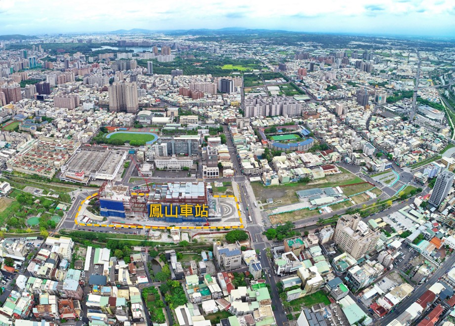
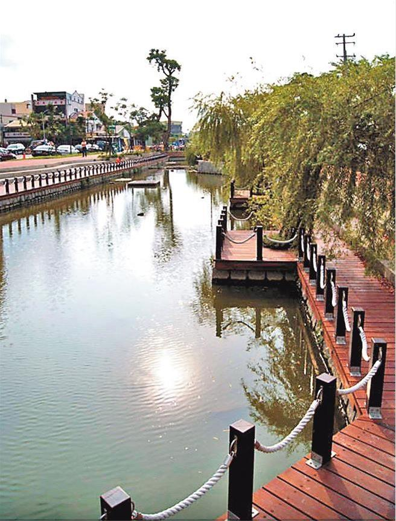

完整背景與說明
鳳山火車站與捷運的銜接，是一條跨十多年的站城整合議題。2013年1月30日，陳慧文與許智傑共同主持「高雄市區鐵路地下化高雄車站及鳳山車站規劃設計」公聽會，要求尚未定案的鳳山車站納入整體規劃，擴大市民參與，並重新檢討交通、開放空間及周邊環境連結。
2015年5月，陳慧文接續主持兩場鳳山車站站體規劃與發展公聽會，追問資訊透明、站區轉乘設施與交通政策。5月29日的公聽會中，高雄市政府交通局說明，鳳山車站當時「本身沒有捷運系統銜接」，站區交通需搭配臺鐵、公車及其他公共運輸接駁，也凸顯車站與捷運路網之間長期存在的轉乘課題。
2018年10月5日，陳慧文再度主持「鳳山火車站整體規劃與設計」公聽會，中央與地方機關、專家學者、民間團體及在地里長共同參與。當時的站區設計討論，把曹公圳、既有橘線鳳山站與鳳山火車站之間的步行連結納入整體規劃，持續處理車站如何與城市生活、轉乘及周邊環境銜接。
2026年5月5日交通部門業務質詢中，陳慧文關切捷運青線是否銜接鳳山火車站，並要求市府持續說明規劃進度。當日質詢中，捷運工程局說明青線仍屬整體路網規劃階段，路線若進入車站仍須處理工程技術條件。5月14日，高雄市政府進一步公開表示，青線已列入整體規劃，並將串聯鳳山火車站、捷運沿線等建議納入可行性評估。
從早期車站改建、轉乘與步行環境，到2026年的青線進站規劃，鳳山火車站的交通整合持續往前推進。目前青線仍在整體路網與可行性評估階段，後續將持續追蹤正式路線、可行性研究、綜合規劃及中央程序。
{kind=link}

{kind=link}

推動歷程
重要進度
鳳山車站規劃設計公聽會
陳慧文與許智傑共同主持公聽會，要求鳳山車站納入整體規劃，擴大市民參與，並檢討交通、開放空間及周邊環境連結。
追問站體規劃、轉乘與跨機關整合
陳慧文主持鳳山車站站體規劃與發展公聽會，持續追蹤資訊公開、交通轉乘與站區整體規劃。
續開公聽會檢視交通規劃
陳慧文續邀相關機關討論鳳山車站交通與轉乘；交通局說明鳳山車站當時本身沒有捷運系統銜接。
鳳山火車站整體規劃與設計公聽會
陳慧文主持公聽會，邀集中央、地方、專家、民間團體及里長，討論車站、曹公圳、既有捷運鳳山站與步行空間的整體連結。
交通部門質詢追問捷運青線進站
陳慧文在交通部門業務質詢中關切捷運青線銜接鳳山火車站及規劃進度；捷運工程局說明仍在整體路網規劃階段。
市府將串聯鳳山火車站納入可行性評估
高雄市政府公開表示，青線已列入整體規劃，並將串聯鳳山火車站、捷運沿線等建議納入可行性評估。